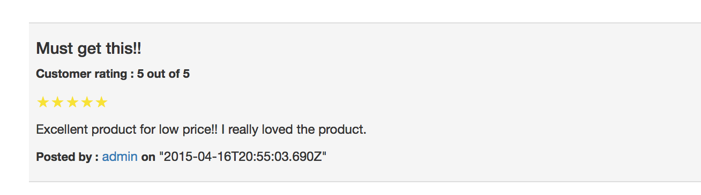

Reviews page
The user in addition to viewing the reviews of the products, he can also write reviews for the products. So when fetching
reviews for a product, both the local reviews as well as the reviews from the Best buy database are displayed. Only those reviews
that were written by users of this application (local reviews) will have a link to the reviewer's profile. User can submit a review
by providing the following information :

The user cannot write reviews if he is not logged in. If the user is not logged in and clicks write review button,
he will be redirected to the login page forcing him to login. Once the user submits the review it will appear in his
profile page under 'Reviews' tab. The user can delete the reviews that he has written so far by navigating to
Reviews tab in his profile page.
Technologies used :
- HTML5
- CSS3
- Bootstrap
- AngularJS
- Node.js
- MongoDB